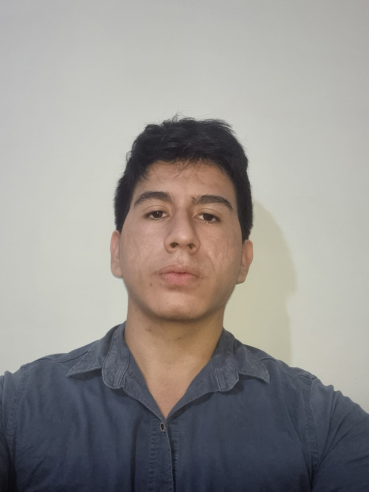

Estudiante de Ingeniería en Computación - ESPOL
Durán, Ecuador | 29/12/2004 | Nacionalidad: Ecuatoriana
Estudiante de Ingeniería en Computación con conocimientos básicos en desarrollo de software y bases de datos. Busco una oportunidad para aplicar mis habilidades y aprender de profesionales en el campo. Me gusta trabajar en equipo y mantener una comunicación efectiva para lograr metas compartidas.
Lengua materna
Nivel: B1-B2
• Comprensión auditiva: B1
• Comprensión lectora: B2
• Expresión escrita: B1
• Producción oral: B1
• Interacción oral: B2
Estudiante enfocado en completar mi formación académica y desarrollar proyectos personales para fortalecer mis habilidades técnicas.
Lenguajes:
Bases de datos:
Herramientas:
Capacidades:
Tecnologías: Python, Algoritmos de optimización, Flask
Este proyecto implementa una solución al Problema del Agente Viajero, un desafío clásico de optimización combinatoria aplicado al contexto de una gira musical. El objetivo es calcular la ruta más corta que permita a una banda visitar varias ciudades y regresar al punto de inicio, minimizando la distancia total recorrida.
Tecnologías: SQL / MySQL
Sistema de gestión de inventario para una empresa automotriz, desarrollado con un enfoque en bases de datos relacionales y operaciones completas de CRUD (Crear, Leer, Actualizar, Eliminar).
Tecnologías: Java, Android Studio, Diagramas UML
Aplicación para móvil que implementa las reglas del juego Uno de una persona contra la máquina. Incluye cartas especiales como reversa, +2, +4, bloqueo, cambio de color y cartas personalizadas.
Guayaquil, Ecuador
Durán, Ecuador